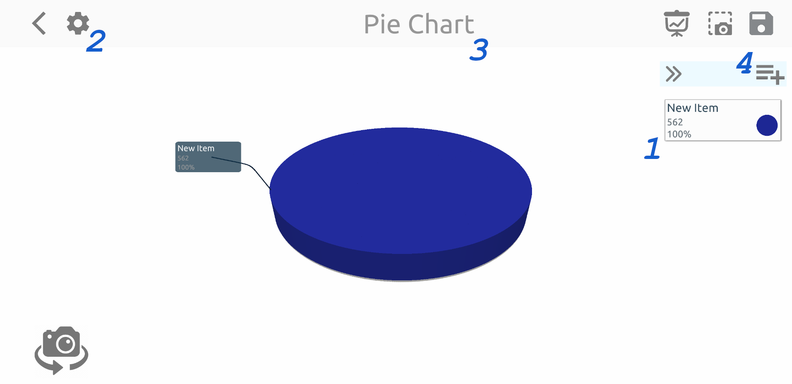
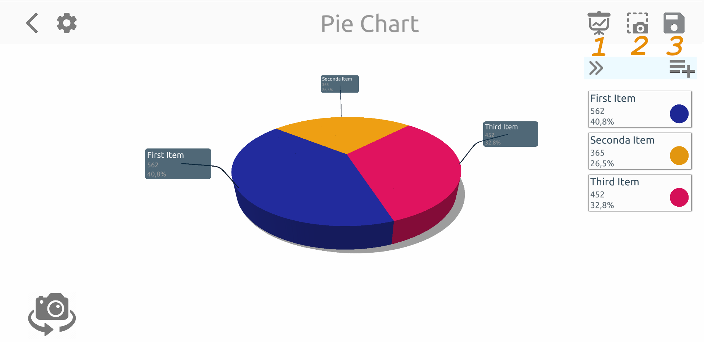
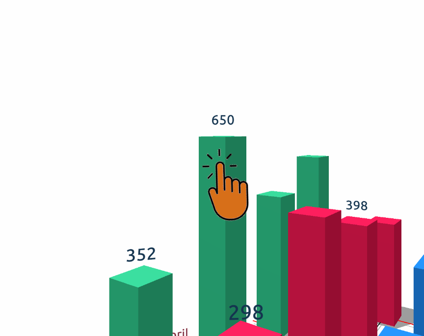

clkGraphs 3D - Guide de création de graphiques
Dans ce guide, nous allons essayer d'expliquer comment créer des graphiques avec l'application clkGraphs 3D et comment utiliser l'application de la manière la plus efficace.
Contenu du manuel
Créer un graphique
Graphique circulaire
Écran des paramètres
Groupes de présentation
Variables
Création de graphiques
Cliquez sur le bouton d'ajout en forme de plus sur la page principale et sélectionnez le type de graphique que vous souhaitez créer.


Graphique circulaire
Imaginons que vous choisissiez le graphique à secteurs dans l'écran qui s'ouvre et que vous créez un graphique à secteurs avec les données dont vous disposez.
La page s'ouvrira d'abord avec la fenêtre d'ajout d'élément. Après avoir entré la valeur et cliqué sur le bouton "Enregistrer", vous verrez la première version du graphique à secteurs comme indiqué ci-dessous.

Étant donné qu'un seul élément a été ajouté à votre graphique à ce stade, il est normal de voir un graphique à secteurs entier d'une seule couleur dans la zone centrale.
Si vous cliquez sur l'élément "Nouvel élément" affiché avec "1" dans l'image ci-dessous, vous pouvez voir la couleur, le nom et la valeur de l'élément actuel.
Vous pouvez modifier vos propriétés. Si vous souhaitez ajouter un nouvel élément à votre graphique, vous pouvez utiliser le bouton ajouter un élément indiqué par "4".
Vous pouvez donner un nouveau nom à ce dessin en cliquant sur la partie indiquée par "3" en haut de l'écran.
Vous pouvez définir la taille de l'étiquette sur le graphique et ajouter le graphique à un groupe de diapositives en utilisant "Paramètres"
bouton avec indiqué par "2".

Fenêtre des paramètres
La page ci-dessous s'ouvre avec le bouton "Paramètres" situé au point deux. La barre de défilement indiquée par le chiffre "1" sur cette page
Définit la taille du nametag à côté du camembert. Au point "2", vous pouvez entrer un nom de groupe pour votre travail et
vous pouvez inclure votre graphique dans ce groupe en appuyant sur le symbole (+) sur le côté. Utiliser la liste déroulante "3" au lieu de créer un nouveau groupe
vous pouvez choisir l'un des groupes disponibles.
Que font ces groupes? On vous en parle maintenant.

Groupes de présentations
Dans l'image ci-dessous, vous pouvez voir les boutons "1", "2", "3" en haut à droite. Après avoir entré toutes vos valeurs, vous pouvez enregistrer votre graphique
en utilisant le bouton de sauvegarde indiqué par "3". Le bouton numéro "2" est le bouton de capture d'écran. Lorsque vous entrez vos valeurs et que votre graphique est prêt
vous pouvez soit faire votre présentation à partir de cette page, soit ajouter cette image en tant que page à un groupe de diapositives que vous avez créé sur la page "Paramètres".
De cette façon, vous pouvez faire des présentations les unes après les autres en ajoutant différents types de graphiques au même groupe de diapositives.
Le bouton "1" ouvre le groupe de diapositives auquel le graphique est attaché.

Un groupe de présentation est exactement ce à quoi il ressemble ci-dessous. Le groupe de diapositives nommé "Mes présentations" apparaît à l'écran.
Les captures d'écran de différents graphiques sont disposées horizontalement à l'infini. Vous pouvez voir d'autres images en faisant défiler la liste horizontalement,
vous pouvez les afficher en pleine page en cliquant dessus. De cette façon, vous pouvez créer différents types de graphiques pour un projet, les uns après les autres et
vous pouvez faire une présentation. Vous pouvez réorganiser les images avec le bouton "Modifier" en haut à droite.

Vous pouvez supprimer l'image sélectionnée du groupe de diapositives actuel à l'aide du bouton "Supprimer" comme indiqué en haut à droite ci-dessous dans les images en plein écran.

Variables
Dans un graphique à secteurs, les éléments n'ont qu'une seule variable, et cette variable est la valeur de l'élément. Mais pour les autres types de graphiques (barres, colonnes, bulles)
les éléments peuvent avoir plusieurs variables. Pour augmenter le nombre de variables dans votre graphique, cliquez sur le bouton (+) affiché dans l'image ci-dessous.

Vous verrez cet écran où les variables sont ajoutées, modifiées ou supprimées. Ici, vous pouvez donner de nouveaux noms aux variables existantes. Vous pouvez supprimer des variables ou en créer une nouvelle.
Lorsque vous faites un changement sur une variable ou ajoutez une nouvelle variable, ce changement sera immédiatement répercuté sur les autres éléments du graphique.
Après avoir entré la valeur de la variable nouvellement ajoutée pour tous les éléments, vous pouvez enregistrer votre graphique.

Comme vous pouvez le voir, les variables des éléments sont affichées sur le graphique. Vous pouvez choisir d'afficher ou non les lignes d'axe et les informations sur l'écran des paramètres.
De plus, vous pouvez voir le graphique sous différents angles avec les boutons de l'appareil photo sur le côté gauche de l'écran, et vous pouvez prendre plusieurs captures d'écran
sous différents angles dans des graphiques encombrés.

Dans les graphiques à barres, à colonnes et à bulles, vous pouvez cliquer sur les modèles de diagramme pour masquer ou rendre visible l'étiquette d'information au-dessus du modèle.
